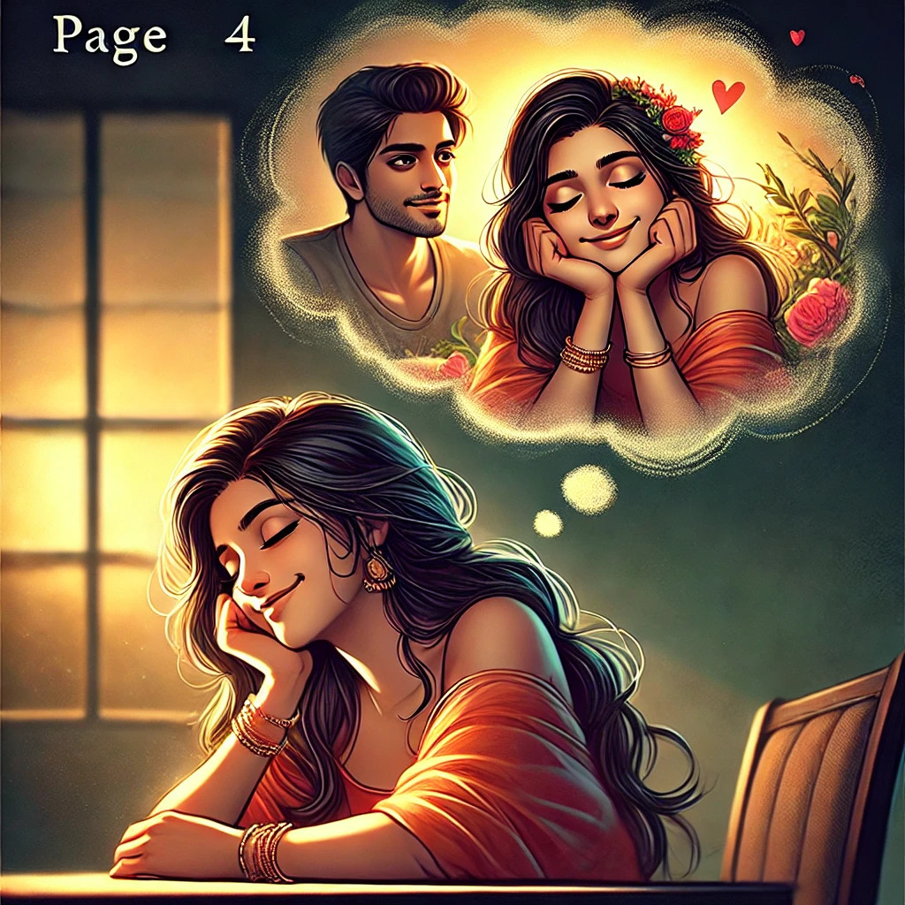
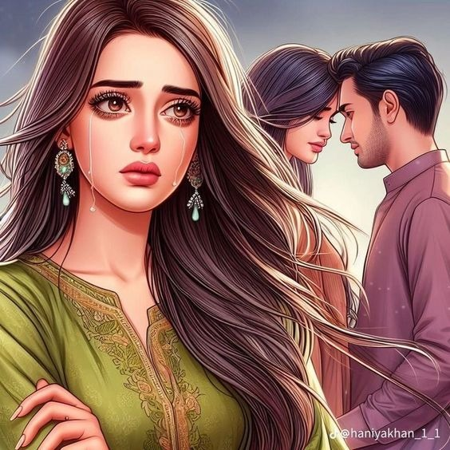
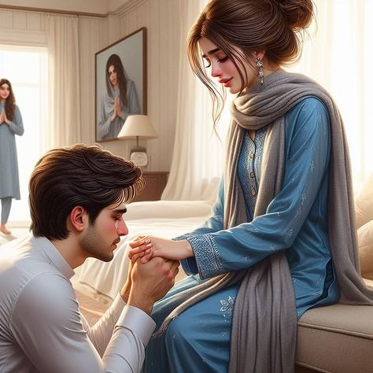
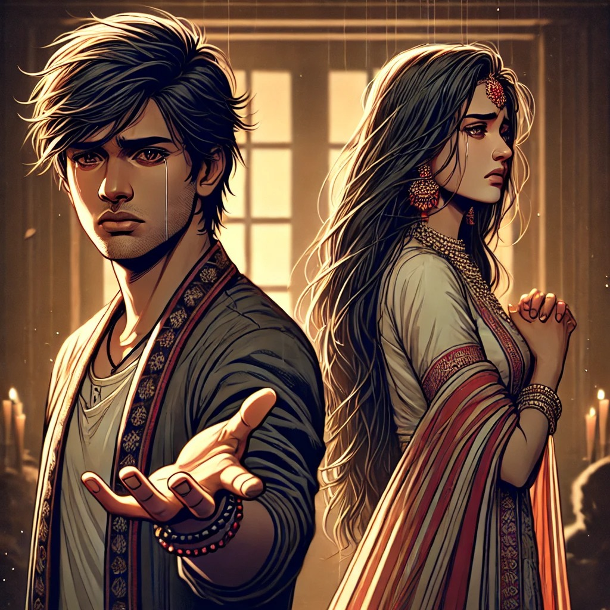
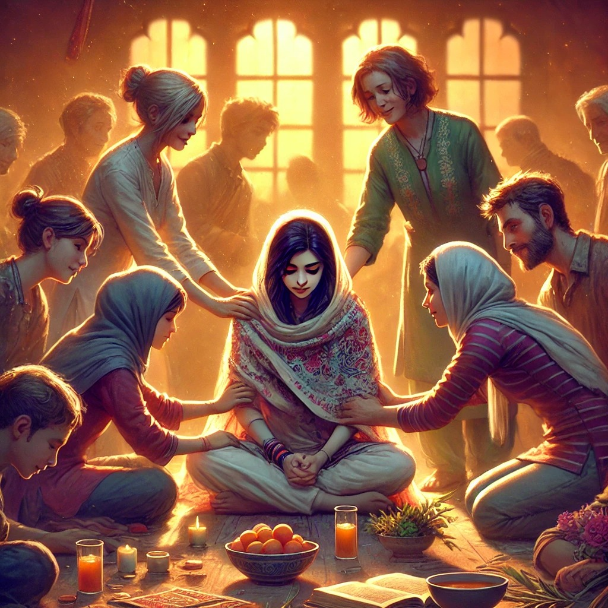
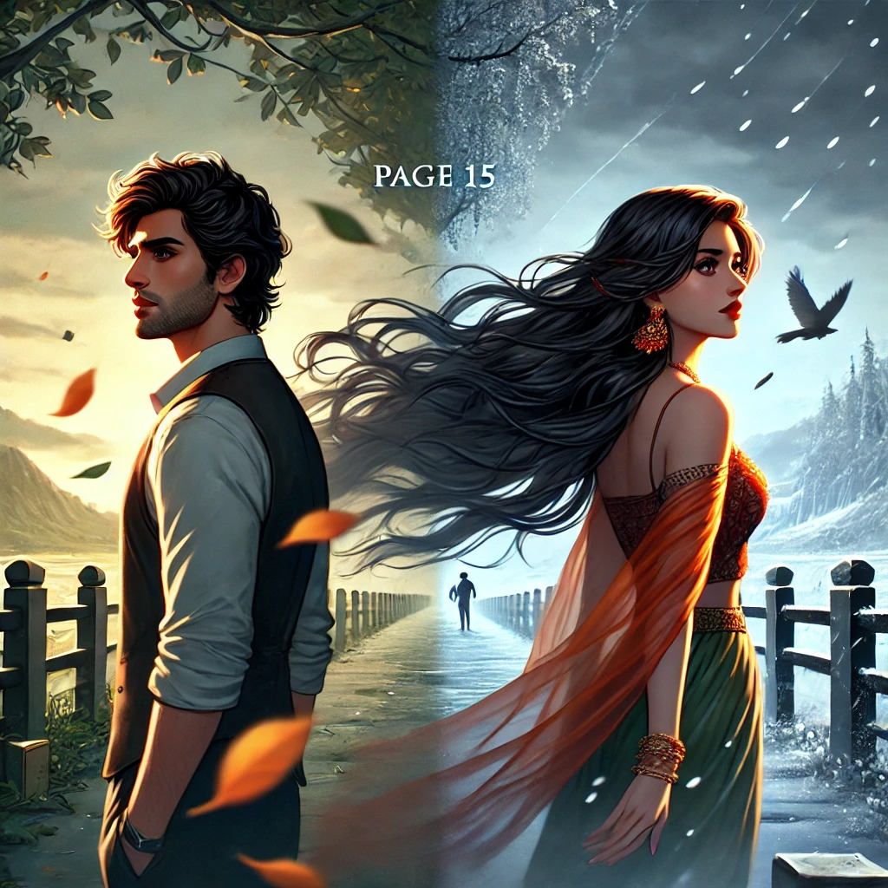

The Beginning

Riya, a joyful and trusting girl, falls in love with Arjun in college. She believes their bond is unbreakable and their love will last forever.
(1)The Charmer
Arjun, charming and outgoing, wins Riya's heart with ease. She is completely devoted to him, unaware of the secrets he keeps.
(2)The Secret Affair
Arjun secretly begins dating another girl, Meera. Though he loves Riya, he finds himself drawn to Meera's different personality.
(3)The Unawareness
Riya is blissfully unaware of Arjun's double life. She dreams of their future together, trusting him with all her heart.
(4)The Discovery
One day, Riya discovers Arjun with Meera. Her heart breaks as the truth comes crashing down, shattering her world.
(5)The Confrontation
Riya confronts Arjun, demanding an explanation. He apologizes, but Riya feels betrayed and unsure if she can forgive him.
(6)The Decision
Riya decides to end their relationship, choosing to respect herself and her worth. Arjun's lies have deeply wounded her.
(7)The Regret
Arjun regrets his actions and tries to win Riya back, but her trust is gone. The bond they shared is broken beyond repair.
(8)The Healing
Riya begins to heal with the support of her friends and family. She focuses on rebuilding her life and finding her strength.
(9)The Realization
Arjun realizes too late how much Riya meant to him. He regrets his choices, understanding the depth of his mistake.
(10)The Loneliness
His relationship with Meera ends as well. Arjun is left alone, haunted by the loss of Riya and the life they could have had.
(11)The New Love
Riya, stronger and wiser, moves forward. She learns to love herself first, finding happiness in her independence.
(12)The Moving On
Arjun tries to reach out to Riya again, but she has moved on. Her heart has healed, and she no longer needs him.
(13)The New Beginning

Riya finds new love, someone who values and respects her. She is grateful for the lessons learned from her past.
(14)The Ending
Arjun is left with memories and regret. Riya, however, looks forward to a bright future, free from the shadows of her past.
(15)The Moral

Trust is crucial in relationships, and once broken, it's hard to repair. True self-worth comes from within, and letting go of those who hurt you is key to healing. Learning from past mistakes leads to strength and a brighter future free from betrayal's shadows.
(16)